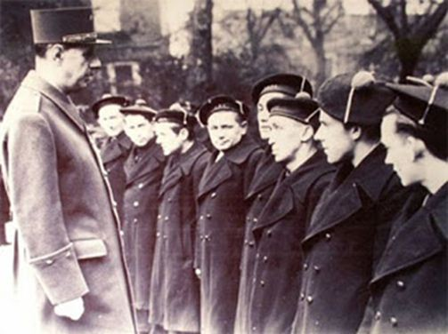
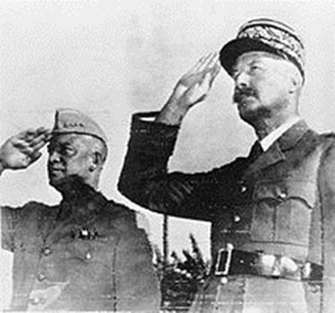
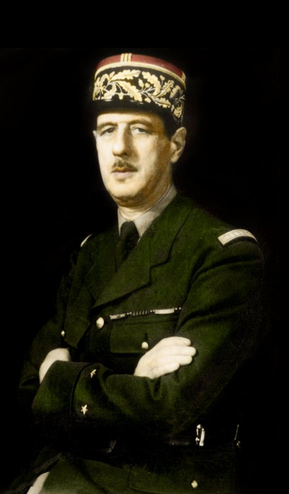

Alexis Tsipras fut parfois salué comme « gaullien », lorsqu’il décida de recourir au référendum. La référence fut oubliée dès que le Premier ministre grec fit le choix politique de la capitulation. Plutôt que de l’accabler – les événements s’en chargeront – il importe de comprendre pourquoi Alexis Tsipras ne fut pas du tout gaullien malgré des discours et des gestes qui laissaient espérer une politique de la résistance et du redressement.
Résumons. Fin juin et au début du mois de juillet 2015, face à l’Eurogroupe, le Premier ministre et son gouvernement disposent de moyens somme toute considérables : une majorité au Parlement, un vaste soutien populaire, une Banque centrale que l’on peut réquisitionner, une administration qui peut organiser le prélèvement d’un impôt forcé, une possibilité de rapprochement avec la Russie, une armée et une police légalistes qui pourraient facilement faire face à des tentatives de déstabilisation et, à moyen terme, la capacité d’influencer le combat politique dans toute l’Europe du sud. La pression des autres membres de l’Eurogroupe est certes violente, l’asphyxie organisée par la Banque centrale est réelle, mais le gouvernement grec peut déjouer les manœuvres d’intimidation et choisir la sortie de la zone euro1.
Pourtant, Alexis Tsipras renonce et la défaite de Syriza a valeur d’avertissement : si des partis anti-austérité prennent le pouvoir en Espagne, au Portugal, en Italie ou en France, ils disposeront des mêmes moyens étatiques et seront exposés aux mêmes tentatives de coup de force.
Il faut donc espérer que les dirigeants actuels et futurs se préparent à l’affrontement. La question du programme est importante, celle des alliances aussi mais la victoire électorale et le soutien populaire n’offrent aucune garantie : nous l’avons vu en France depuis 1983 et en Grèce cette année. Sommes-nous condamnés à faire des paris sur la solidité psychologique des gens que nous voulons porter au pouvoir ? Il est possible de réfléchir plus avant, non sur les convictions exprimées mais sur la nature de la conviction politique forgée pendant les années d’opposition et mise à l’épreuve du pouvoir.
Bien entendu, les dirigeants de Syriza, de Podemos et du Parti de gauche sont riches d’analyses, d’expériences et de convictions. Ils ont lu Marx et Gramsci, c’est impressionnant. Ils s’y connaissent en luttes sociales et politiques, c’est incontestable. Ils sont persuadés qu’ils incarnent une radicalité nouvelle. Ils ont l’intelligence, le courage et, quand ils prennent le pouvoir, la volonté de changer l’ordre des choses. Hélas, cela ne suffit pas. Que manquait-il à Syriza ? Que manque-t-il au Parti de gauche qui piétine loin derrière le Front national ? Que risque-t-il de manquer à Podemos ? Pour trouver une réponse, les dirigeants actuels et futurs de la gauche « radicale » auraient avantage à s’interroger sur la démarche politique d’un homme qui est hors de leur culture et de leurs représentations. Comment De Gaulle est-il devenu gaullien ? Telle est la question.
A Londres, en juin 1940, le général de Gaulle est dans une situation d’extrême faiblesse, matérielle, militaire et politique. Lorsque Pierre Denis prit la responsabilité des finances, la caisse contenait la veille 14 shillings mais cette réserve était épuisée et le nouveau venu tira de sa poche 10 shillings pour financer l’envoi de deux télégrammes signés par le général de Gaulle.
Le 15 août 1940, les Forces Françaises Libres comptent 4 500 soldats qui obéissent à un homme jugé par une cour martiale et condamné à mort le 2 août pour « trahison, atteinte à la sûreté de l’État, désertion à l’étranger en temps de guerre sur un territoire en état de guerre et de siège ». Dans la capitale britannique, la haute hiérarchie militaire est tout aussi absente que l’élite civile. De Gaulle est seul, dans une Angleterre qui risque à son tour d’être envahie et terrassée. Presque seul : des soldats rescapés de la Norvège, des légionnaires, des lieutenants et des capitaines, des marins du commerce et des marins pêcheurs, des « patriotes anonymes […] qui se sont échappés de France pour servir » écrit Jean-Louis Crémieux-Brilhac2. Ce sont « des hommes partis de rien »3 et le général de Gaulle est le premier d’entre eux.
Le premier et le plus fou de tous. Sa folie, c’est de ne pas vouloir admettre la réalité telle que la décrivent les gens importants – députés, ministres, généraux, intellectuels éminents – qui se retrouvent à Vichy ou qui, en métropole et dans l’Empire, font allégeance au pouvoir de fait. Au début de l’été 1940, toutes les données objectives prouvent que l’Allemagne a gagné la partie et que l’Angleterre n’en a plus pour longtemps. Le réalisme, c’était l’armistice et c’est la nécessité de trouver un arrangement avec Hitler pour sauver ce qui peut l’être et trouver pour la France une place dans l’Europe nouvelle… La folie du général de Gaulle, c’est de penser qu’une autre réalité va apparaître – celle d’une Allemagne incapable de gagner une telle guerre, celle d’une Angleterre qui va tenir en attendant l’entrée en guerre des Etats-Unis, celle d’une France qui peut se réaffirmer hors du territoire métropolitain.
On est tenté de crier au génie stratégique du Général et d’en rajouter sur l’héroïsme de ses décisions. C’est plus prosaïque. De Gaulle est un militaire qui situe les rapports de force dans le temps et dans l’espace. Mais son coup d’œil, aussi magistral soit-il, ne suffit pas à expliquer que le soldat rebelle devienne le général de Gaulle : un grand stratège eût simplement demandé à rejoindre un état-major britannique. Son génie c’est, au sens premier, sa capacité à créer une nouvelle réalité.
Tant qu’il réside à Londres, le général de Gaulle est dans la dépendance du gouvernement britannique, qui le loge à Carlton Gardens et qui ordonne à la Banque d’Angleterre d’ouvrir un compte spécial à son nom, sur lequel les dépenses de la France libre seront financées jusqu’en 1943. Les Anglais contrôlent les interventions du Général à la BBC et lui accordent, ou non, des moyens de transport. Ils équipent et entretiennent les troupes françaises et contrôlent les transmissions de la France libre. Bien sûr, le soutien de Churchill est amicalement accordé aux Français libres mais l’Angleterre est en lutte pour sa survie et ce qui est donné d’une main peut être retiré de l’autre si le gouvernement le juge nécessaire.
Dans cette situation de dépendance totale, le réalisme politique et l’efficacité immédiate exigeaient que le général de Gaulle se cantonne dans le rôle qui lui était aimablement assigné : celui d’un chef de troupes supplétives. On sait que le Général refusa d’être une carte parmi d’autre dans la main des Britanniques, qui mirent beaucoup de temps à exclure Vichy, et l’histoire de la France libre fut jalonnée de coups d’éclats et de violentes crises diplomatiques. Je veux en évoquer quelques-uns pour montrer comment une autorité politique en situation de faiblesse peut s’affirmer face à des gouvernements dotés de moyens considérables.
Chars de la 1ère Compagnie autonome de chars de combat des Forces françaises libres lors de la campagne du Gabon en 1940Cela commence en octobre 1940 au Gabon, que le Général veut rallier à la France libre malgré le gouvernement britannique qui ne veut pas provoquer Vichy – même après Montoire – et qui ordonne à la Royal Navy de s’abstenir. Les Français passent outre : sous le commandement du général Koenig, deux compagnies de légionnaires et un bataillon colonial s’emparent de Libreville le 9 novembre, de Port-Gentil deux jours plus tard et soudent le Gabon à l’Afrique équatoriale et au Cameroun déjà libérés.
Le ralliement de l’Afrique est essentiel car la France peut s’y affirmer en toute indépendance et mobiliser des moyens militaires et financiers qui lui sont propres. La création du Conseil de défense de l’Empire, le 27 octobre 1940, manifeste cette volonté.
Au Levant, la France libre engage ses forces pour reconquérir la Syrie et le Liban, alors sous mandat français, face au général Dentz et aux troupes de Vichy. La Convention de Saint-Jean d’Acre du 14 juillet 1941 qui met fin aux hostilités est signée entre les Britanniques et les représentants de Vichy… mais pas par le général Catroux qui a pourtant participé aux négociations.
Or le texte ne contient aucune référence à la France libre et équivaut à un passage de la Syrie et du Liban sous l’autorité britannique. Furieux, De Gaulle se précipite au Caire. Reçu par le ministre d’Etat pour le Proche-Orient, Oliver Lyttleton, il dresse un violent réquisitoire contre la politique britannique et remet au ministre un document aux termes duquel il soustrait les troupes françaises du Levant à l’autorité du commandement en chef britannique ! Lyttleton déchire le document, interdit au Général tout déplacement au Levant et le menace d’une mise aux arrêts…
Avant de conclure avec le chef de la France libre un accord qui confirme les droits historiques de la France au Levant et qui reconnait la « position dominante et privilégiée » qui devra être la sienne lorsque la Syrie et le Liban seront devenus des Etats indépendants.
Plus tard, Oliver Lyttleton dira que « le général de Gaulle avait compris comment traiter avec les Anglo-Saxons : il s’offensait au moindre prétexte. Il est indéniable et bien excusable que, dans un moment où la puissance française était au plus bas, des décisions aient été prises et aient dû être prises sans consultation ni accord de notre allié et ami. Il n’a jamais rien laissé passer. Il relevait avec passion tout impair, toute maladresse ou toute impolitesse. C’est ainsi, et non par la souplesse ou l’urbanité, qu’il se fit respecter et, les Anglophones ayant horreur des scènes et ne supportant pas d’être taxés de manque de tact, d’irréflexion ou de déloyauté, qu’il parvint à une situation qu’aucune diplomatie de la complaisance n’aurait pu lui valoir »4.
Le chef de la France libre est capable d’aller encore plus loin. A Brazzaville, le 25 août 1941, un journaliste du Chicago Daily News lui demande pourquoi Londres ne rompt pas avec Vichy en reconnaissant un gouvernement de Français libres. De Gaulle répond par des affirmations inouïes qu’il faut lire en se souvenant que la France libre dépend encore presque totalement du bon vouloir britannique :
« L’Angleterre a peur de la flotte française. »
« En fait, l’Angleterre a conclu avec Hitler une sorte de marché pour la durée de la guerre, dans lequel Vichy sert d’intermédiaire. Vichy sert Hitler en maintenant le peuple français en état de sujétion et en vendant l’Empire français à l’Allemagne morceau par morceau. »
« Mais n’oubliez pas que Vichy sert également l’Angleterre en maintenant la flotte hors des mains d’Hitler. »
« L’Angleterre exploite Vichy de la même manière que l’Allemagne ; la seule différence est dans leurs intentions. Nous assistons en fait à un échange mutuellement profitable entre deux puissances adverses qui permet au gouvernement de Vichy de subsister aussi longtemps que l’Angleterre et l’Allemagne y trouveront leur compte. »
Sur le coup, Churchill affirme que De Gaulle s’est disqualifié. Les deux hommes se rencontrent à Londres le 12 septembre, s’affrontent durement… et se quittent sur des propos apaisés5.
La diplomatie offensive, voire offensante, a révélé, une fois de plus, son efficacité.
De Gaulle n’est pas disqualifié mais au contraire suffisamment conforté pour créer le 24 septembre 1941 le Comité national français qui est l’ébauche du futur Gouvernement provisoire.
D’autres conflits interalliés sont trop connus pour que je les évoque ici :
Le débarquement des Forces navales françaises libres à Saint-Pierre-et-Miquelon en décembre 1941 malgré l’opposition des Etats-Unis, qui viennent d’entrer en guerre contre le Japon et l’Allemagne et qui veulent maintenir de bonnes relations avec Vichy. D’abord partisan de l’opération, Churchill s’était aligné sur Roosevelt…
Le conflit avec le général Giraud : là encore, l’analyse réaliste est défavorable au chef de la France libre. En avril 1942, Giraud, candidat des Etats-Unis, a 300 000 hommes sous ses ordres, et de Gaulle 50 000.
La longue bataille contre la « monnaie » et l’administration militaire que le gouvernement des Etats-Unis veut imposer sur les territoires français libérés6.
Le déclenchement de l’insurrection parisienne – les FFI ont deux mille fusils et deux cent cinquante mitraillettes ; von Choltitz dispose de vingt mille hommes, de soixante canons et de plusieurs dizaines de chars – qui oblige Eisenhower à décider la prise de la capitale, et la victoire politique que constitue l’entrée de Leclerc dans Paris.
Ce qui a été conçu et voulu dans une adversité totale est devenu réalité. Dans une conjoncture beaucoup moins tragique, face à des puissances beaucoup moins redoutables, pourquoi des hommes politiques estimables ne parviennent-ils pas à devenir des hommes d’Etat ?
Les chansons de geste ont leur charme mais, dans l’ordre politique, elles troublent la réflexion. Il faut se méfier du gaullisme de glorification – comme du légendaire monarchique. Présenter Charles de Gaulle comme un héros digne de l’antique, c’est encourager les dirigeants à la médiocrité. Ecoutons-les : ils sont lucides, et humbles ; ils ne sauraient prétendre à tant de grandeur ; leur courage est d’assumer petitement les petitesses du quotidien ! Les facilités de la psychologie doivent être tout aussi résolument écartées : le Caractère, l’Orgueil, la Volonté… n’expliquent rien car il faut distinguer, quand on s’intéresse aux hommes d’Etat, la personne et le personnage. Il est enfin évident que la carrière, aussi brillante soit-elle, ne prédestine pas. En juin 1940, plusieurs personnalités peuvent jouer un rôle de premier plan : Léon Blum, Georges Mandel, le général Noguès qui commande les forces françaises en Afrique du Nord, le général Catroux qui a été gouverneur général de l’Indochine française de juillet 1939 au 25 juin 1940 et qui a plus d’étoiles à son képi que le général de Gaulle…
Pourquoi Charles de Gaulle ? Régis Debray donne la clé : parce que c’est « le dernier homme d’Etat ouest-européen qui ait pris la puissance de l’esprit au sérieux »7. Le Général n’est pas un intellectuel et l’intellectualité comme l’intellectualisme ne sont pas gage de rectitude : de grands intellectuels, qui plaçaient la nation plus haut que tout – Charles Maurras, pour ne citer que lui – se sont fourvoyés dans le pétainisme. De Gaulle n’a pas lu beaucoup de livres de doctrine mais on n’a pas besoin de doctrine, et encore moins d’idéologie, lorsqu’on a une pensée. Mieux : De Gaulle a une pensée adéquate. Mieux encore : De Gaulle est l’homme d’une pensée en acte – qui se traduit par des actes et qui est elle-même en mouvement. La pensée gaullienne est ordonnée à la France, nation historique plus que millénaire – le Général lui attribue généreusement 1 500 ans.
Son « idée de la France » est une idée incarnée et instituée, une réalisation qui ne s’accomplit que dans et pour la liberté. Cela signifie que la France n’est la France que dans l’indépendance, que l’indépendance s’obtient par l’acte d’un pouvoir souverain qui se légitime par le service de la patrie – de son unité, de sa sécurité – et par le consentement populaire. Etre gaullien, c’est lier, indissolublement, le principe de souveraineté et le principe de légitimité. C’est juger, par conséquent, que le reniement de ces principes et les compromis sur ces principes mettent en péril l’existence même de la France.
En juin 1940, tout est à reconstruire face à Vichy : l’armée française, la souveraineté, le gouvernement. Cela se fait par la « puissance de l’esprit », selon une démarche méthodique déjà exposée dans La France et son armée : « Grandir sa force à la mesure de ses desseins, ne pas attendre du hasard, ni de ses formules, ce qu’on néglige de préparer, proportionner l’enjeu et les moyens : l’action des peuples, comme celle des individus, est soumise à ces froides règles. » Les principes sont indispensables, la méthode est nécessaire mais cela ne suffit pas : il faut encore réussir à incarner la légitimité en « incorporant l’unité et la continuité nationale quand la patrie est en danger »8.
C’est un travail sur soi-même, très difficile et douloureux : être gaullien, c’est se détacher de soi sans se prendre pour la France. Il faut sacrifier une grande partie de sa vie privée pour devenir le serviteur de la nation. Charles de Gaulle réussit ce tour de force en juin 1940 et c’est pour cela que ses compagnons d’armes le reconnaissent comme chef. Le général Catroux a le mot juste lorsqu’il déclare se rallier au « Connétable » : le connétable n’est pas le roi mais l’homme qui a en charge la défense du royaume. Ce n’est pas la personne privée qui incarne, mais le personnage public. Et c’est le fait d’être dépassé par son personnage qui décuple le courage physique, l’audace diplomatique, l’endurance face aux déceptions, aux intrigues et aux trahisons dont De Gaulle, comme tous les hommes d’Etat, fut accablé9.
Un homme d’Etat, « …c’est un homme capable de prendre des risques », disait le Général. Cette prise de risque est étrangère au calcul du carriériste et au culot de l’aventurier. Elle est proportionnée à l’enjeu politique selon la dialectique du faible et du fort. Régis Debray rappelle ce dialogue de 1942 :
- Churchill : « Faites comme moi, Général, je plie devant Roosevelt, et puis je me relève ».
- De Gaulle : « Je suis trop pauvre, je ne puis ».
Etre gaullien, c’est cultiver l’intransigeance parce que l’intransigeance est la force du faible. Cette intransigeance s’appuie sur des principes politiques intangibles – la souveraineté, la légitimité – et se manifeste par une mise en jeu de sa personne et de la collectivité qu’on représente. Cette mise en jeu est angoissante et la plupart des hommes politiques préfèrent invoquer les « contraintes » qui ne justifient rien mais assurent le confort de la soumission. Pendant la guerre, le Général ne cesse de prendre les risques méthodiques, raisonnés, qui permettent de se libérer des prétendues contraintes. Après 1958, il comprendra immédiatement la stratégie nucléaire de dissuasion du fort par le faible selon le risque et l’enjeu et, disposant de la puissance de l’Etat souverain, il pourra mener une politique étrangère indépendante marquée par la chaise vide à Bruxelles, la sortie du commandement intégré de l’Otan, le discours de Phnom Penh…
La radicalité gaullienne est sans faille tant que le Général incarne le projet national. La radicalité de la gauche de la gauche est dans le discours, non dans l’acte. Cela tient aux faiblesses de la pensée qui inspire ce discours : méfiance à l’égard des pouvoirs institués, rejet du principe de légitimité, volonté d’abolir la souveraineté nationale dans une « internationale » mythique depuis longtemps résorbée dans l’européisme banal. Fondamentalement, la gauche radicale récuse la radicalité gaullienne. Comme nous venons de le voir en Grèce, sa « culture de gouvernement » est viciée par l’esprit de compromis qui noie les grands principes dans la boue du moindre mal. Elle subira de nouvelles défaites si la capitulation d’Alexis Tsipras ne lui sert pas de leçon.
B.R.
1Pour une explication d’ensemble, appuyée par une information très sûre, cf. le blog de Jacques Sapir : http://russeurope.hypotheses.org/
2Cf. La France libre, Gallimard, 1996.
3Cf. René Cassin, Les hommes partis de rien, Plon, 1975.
4Cité par Jean-Louis Crémieux-Brilhac, La France libre, op. cit. page 160.
5Pour une relation très complète de l’entretien, cf. François Kersaudy, De Gaulle et Churchill, Plon, 1982. Pages 132-136
7Régis Debray, A demain de Gaulle, Gallimard, 1990.
8Mémoires d’Espoir, I, Le Renouveau. Cette citation comme la précédente est tirée de l’excellent ouvrage de Jean-Luc Barré, Devenir de Gaulle, 1939-1943, Perrin, 2003. Cf. mon article sur ce blog : http://www.bertrand-renouvin.fr/devenir-de-gaulle/
9Le 15 juin 1943, le Général, qui est à Alger, en pleine affaire Giraud, écrit à sa femme : « Tu ne peux pas te faire une idée de l’atmosphère de mensonges, fausses nouvelles, etc. dans laquelle nos bons alliés et leurs bons amis d’ici – les mêmes qui leur tiraient naguère dessus – auront essayé de me noyer. Il faut avoir le cœur bien accroché et la France devant les yeux pour ne pas tout envoyer promener… ». Cité par Jean-Luc Barré, op. cit. page 344.